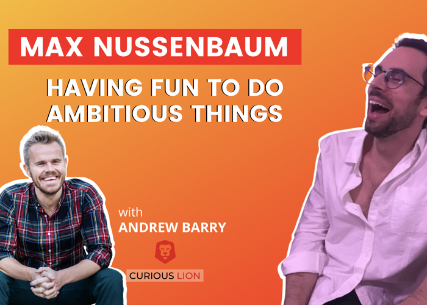
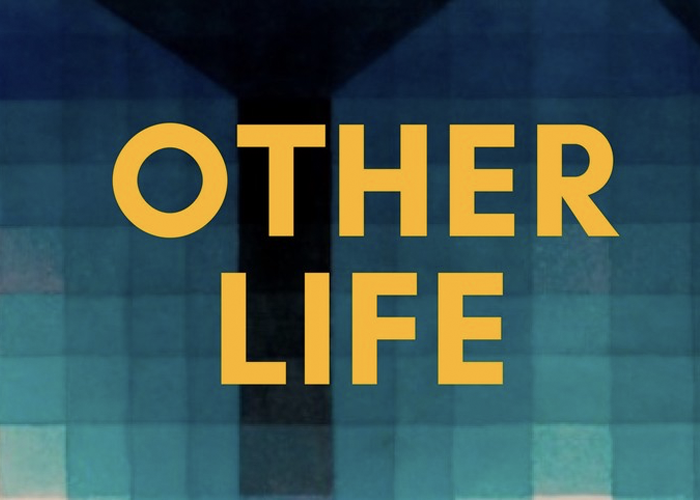
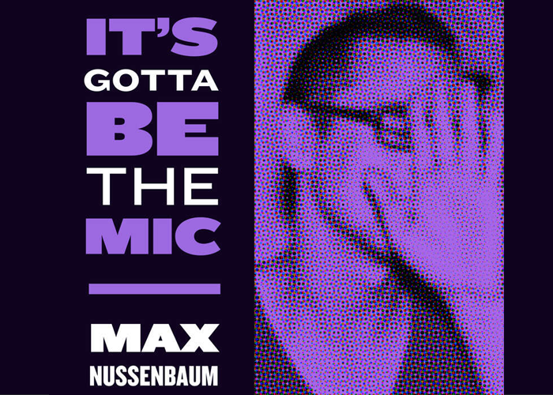

Media & Speaking
Media

How to do ambitious things and still have a ton of fun on How Did You Learn That

Talking Detroit, cults, and why JFK was an overrated President on Justin Murphy’s Other Life podcast
Why ambitious people should write on Village Global’s Venture Stories podcast

The tension between being an artist and a founder on It’s Gotta Be the Mic
Talks

Every Company Is a Tech Company: My Talk at the 2017 PM Grow Summit


What I’ve Learned From Keeping a Journal for Twenty-Two Years (VFA Training Camp 2012)